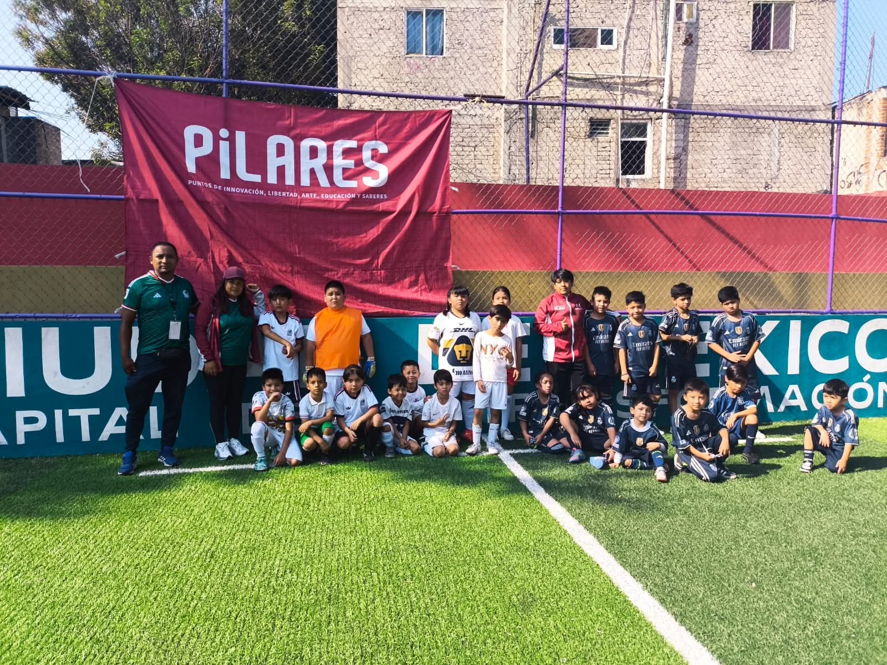

Fútbol infantil en el Palacio
PILARES CDMX organiza una clase masiva para niñas y niños como parte de la fiebre mundialista.
Leer másSitio web enfocado en la cobertura deportiva de la CDMX, con el objetivo de transmitir y divulgar noticias, crónicas, reportajes y una sección de opinión con el fin de llevarles la información en todos sus hogares.
Últimas noticias
1 de cada 4 propiedades se rentan en CDMX a través de la plataforma
Leer másTras un largo recorrido, las jugadoras mostraron su ímpetu en la cancha
Leer más
El fútbol rinde homenaje a la docencia en Iztapalapa con el torneo “Temachtiani”
Leer másTras una larga jornada de actividades comunitarias, se formaliza la apertura de las canchas en Iztapalapa.
Leer másSe estrenaron nuevas instalaciones deportivas en la Alcaldía
Leer másMega clase en el Zócalo
Miles de personas se reunieron en el corazón de la Ciudad de México para hacer historia.
Leer másPILARES CDMX organiza una clase masiva para niñas y niños como parte de la fiebre mundialista.
Leer másOpinión
¡El Coloso revienta! ¿Tradición o Mercancía?
La Ciudad de México recupera su latido más profundo. Tras casi 2 años de silencio, el Estadio Azteca —ahora Estadio Banorte— reabre sus puertas...
Leer másEl silencio roto
Blaijaith Aguilar anuncia su separación del equipo de gimnasia nacional de México
Leer más